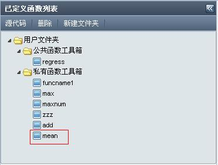
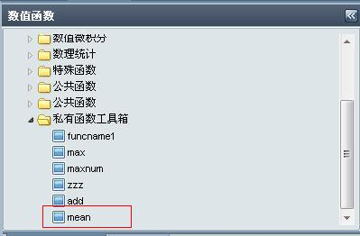

1.总界面
2.用户自定义公有函数
3.用户自定义私有函数
4.语法规则(大体上同C语言语法规则)
函数结构:
函数名（参数列表，out 返回值）
{
........
return(返回值列表2)
}
语法规则:
说明一:"参数列表" 同C语言语法,但这里只提供两种数据类型及其指针类型,int(int *)和double(double *)
说明二:"out" 为关键字,标识其后面的参数为返回值,不能没有"out ...",形式为"out+类型1+*+返回值名1, out+类型2+*+返回值名2, ..."
说明三:"返回值列表"中参数均为指针类型,也只有两种数据类型,int *和double *
说明四:"return"为关键字,只能有一个,标识其后面的变量为返回值,不能没有"return(...)"
说明五:"返回值列表2"形式为:"返回值名1+空格 +m1*n1 ，返回值名2+空格+m2*n2,…" ,多个返回值时包含"空格"和"," ;
返回值为1*1表示该返回值为一个数；返回值为m*n表示该返回值为一m*n矩阵（数组）；
说明六:函数前不要带返回值数据类型void int double ....;
示例:
mean(double* x,int n,out double* m)
{
int i;
double tmp=0;
for(i=0;i<=n-1;i++)
tmp=tmp+x[i]/n;
m[0]=tmp;
tmp=0;
for(i=0;i<=n-1;i++)
tmp=tmp+(x[i]-m[0])*(x[i]-m[0]);
m[1]=tmp/(n-1);
m[2]=sqrt(m[1]);
return(m 1*3);
}
5.示例
填写函数信息:
编辑函数体后按上图中的"确定"按钮开始编辑(可能要等待时间)并出现相应编译信息:
实时更新函数列表(系统自动完成):


使用函数:
|